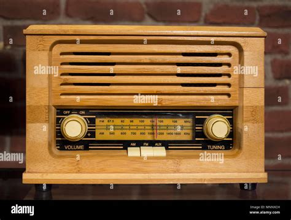
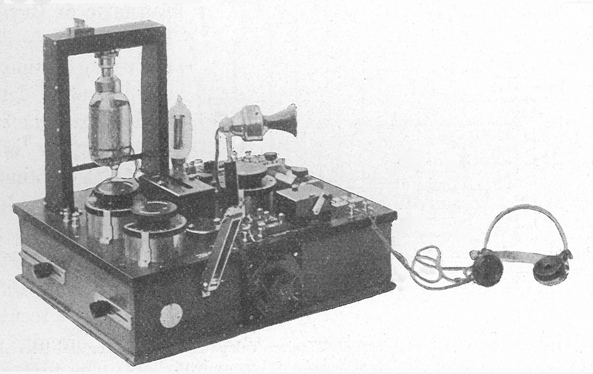
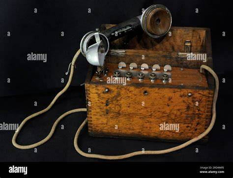
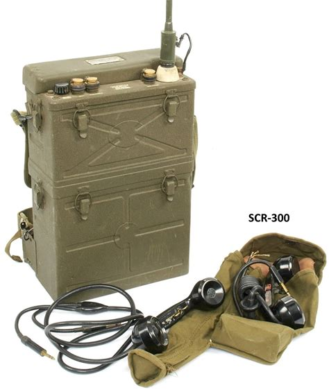
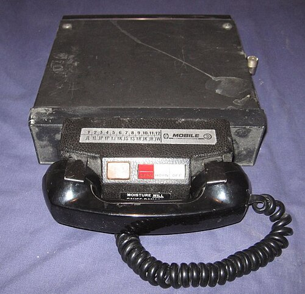
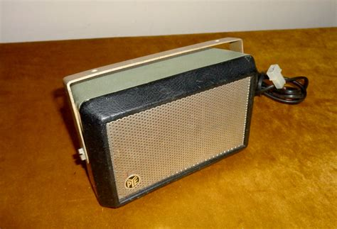
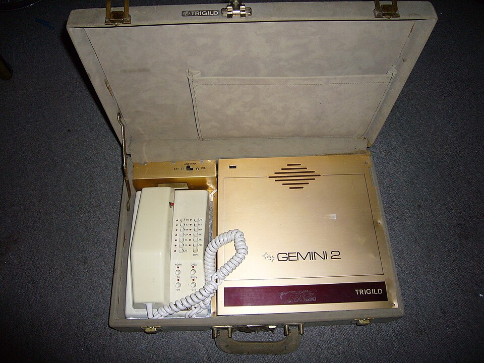
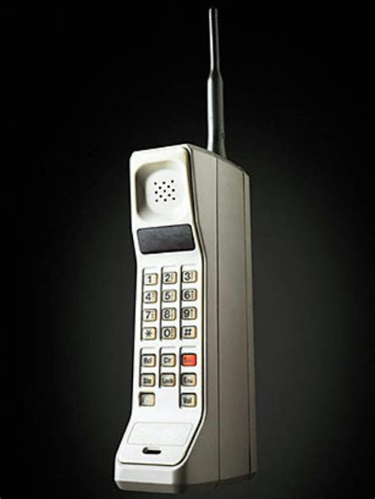

De la télégraphie sans fil de Marconi à l'Internet des Objets et au réseau 5G — plus de 240 ans d'innovations qui ont transformé la communication humaine. Les prouesses en télécommunication depuis les premières ondes hertziennes aux connexions millimétriques, en passant par WiFi, Bluetooth, WiMAX, LoRa, Sigfox et ZigBee, se poursuivent jusqu'à nos jours.
De la télégraphie sans fil de Marconi à l'Internet des Objets et au réseau 5G — plus de 240 ans d'innovations qui ont transformé la communication humaine. Les prouesses en télécommunication depuis les premières ondes hertziennes aux connexions millimétriques, en passant par WiFi, Bluetooth, WiMAX, LoRa, Sigfox et ZigBee, se poursuivent jusqu'à nos jours.
Station TSF — Marconi 1895 : émetteur à étincelles, antenne verticale, clé Morse et récepteur à galène




Poste téléphonique embarqué dans l'automobile — IMTS/MTS, sans handover ni cellules




En 2024, on estimait à 16 milliards le nombre d'objets connectés dans le monde — un chiffre qui devrait dépasser 32 milliards d'ici 2030, alimenté par la 5G, les réseaux LPWAN et la miniaturisation des capteurs.
| Protocole | Portée | Débit max | Conso. | Topologie | Usage typique |
|---|---|---|---|---|---|
| WiFi 6 | ~100 m | 9,6 Gb/s | Élevée | Étoile | Maison, bureau, caméras IP |
| BLE 5.0 | ~100 m | 2 Mb/s | Très faible | Étoile/Mesh | Wearables, santé, beacons |
| ZigBee | 10–100 m | 250 kb/s | Très faible | Mesh | Domotique, éclairage smart |
| LoRaWAN | 2–15 km | 50 kb/s | Ultra faible | Étoile | Smart city, agriculture, eau |
| NB-IoT | 5–15 km | 200 kb/s | Très faible | Cellulaire | Compteurs, alarmes, trackers |
| Sigfox | 10–50 km | 100 b/s | Ultra faible | Étoile | Logistique, géolocalisation |